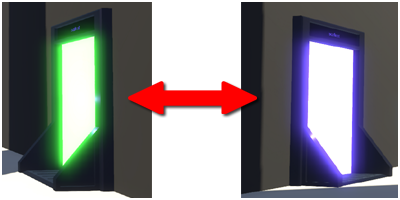

This application eases the creation of bidirectional portals: Two interconnected doors allowing people to teleport in the two directions.
To make the setup very simple, and achievable independently by two different domain's owners, the only thing you have to agree on, is to use a same "PAIRING KEY".
This key is used to synchronize automatically two doors together and achieve their persistent configuration.
You will have the choice of using a physical door model, or an invisible teleportation trigger(that you can add over your own model.)
Let's create a door...
STEP 1 - Define a Pairing Key:
The "Pairing Key" is a unique value that will allowed this door to to automatically setup with a second one.
You can set the value of your choice or use the "Random" button to generate one, or use the one that another owner gives you.
If you are not the owner of the 2nd location, you will have to send this "Pairing Key" to the other owner to allow him configuring his door.
STEP 2 - Generate the Portal
Once the "Pairing Key" is defined, you can now generate your door:
Edit and position your door...
The "door" has been generated in front of your avatar.
You must now edit it to set its final position in your world.
TO DO THIS: You must CLOSE this window and use the "CREATE" application.
BEFORE YOU GO...
When your door will be where you want it, OPEN AGAIN the "2 WAYS TP" application
to continue the setup with the STEP 3 to ACTIVATE your door.
Note: If you don't want to use this "door model" but use an "invisible teleportation trigger", don't worry, this will be decided during the STEP 3.
It's anyway a lot more easy to use the model to position your trigger correctly as it is clear where the front side is. (Where the visitor will enter the world.)
STEP 3 - Door activation
By clicking on one of the "ACTIVATE" buttons, your door will be configured and activated definitively.
The door might stay in the PENDING mode until the 2nd door get also activated.
NOTE: You have 24h to have the two doors setup. Over that delay, the service will condider the pairing request as abandonned.
The pairing is ongoing...
If the other door is already setup, then your door might be active immediatly.
If the other door is not yet setup, then your door will be "PENDING" until the other door get activated.
Note: You need to visit this door inside 24 our to have the pairing completed.